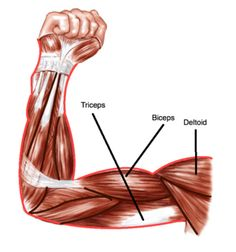
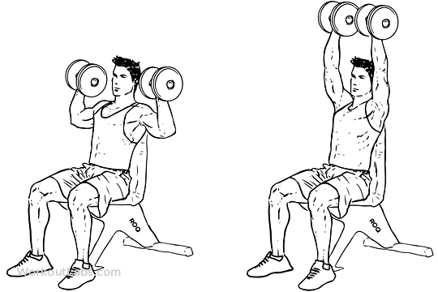
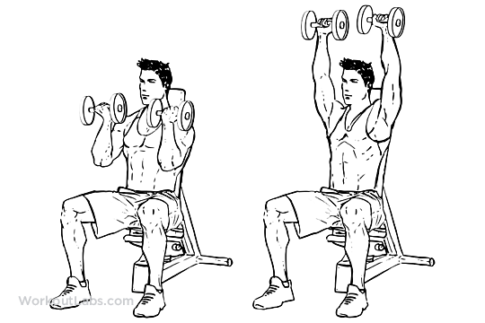
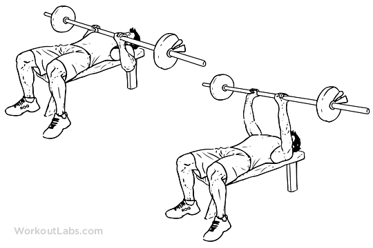
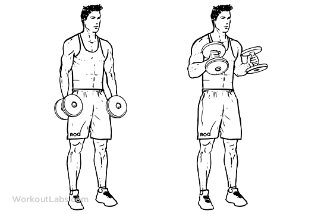
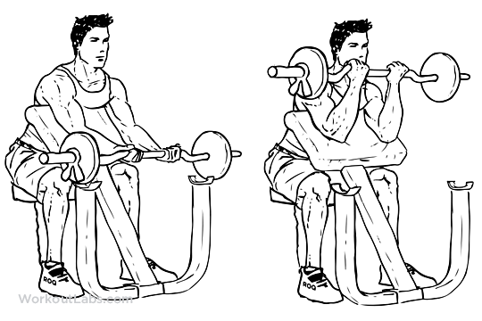
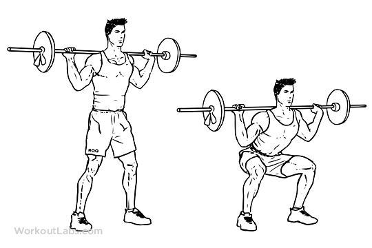

9 Best Arm Workouts w/ Dumbbells
Here are some simple, yet effective arm exercises that require using dumbbells and correct form.
These workouts target your deltoids, triceps, and biceps from multiple directions.
Deltoid Exercises

1.Seated Military Press
- Grab a pair of dumbbells suited to your strength level and sit on a utility bench that has back support
as you put your dumbbells on top your thighs. - Next use your thighs as support to put your dumbbells to shoulder height on each side.
- Rotate your wrists so that they are facing forward, this is where your starting positoion will be.
- While exhaling, push each of the dumbbells at the same time until they touch at the top.
- Then slowly come back down to the starting position while inhaling.
- Repeat
- Aquire a pair of Dumbbells that matches your strength and sit on a utility bench with back support.
- Raise the dumbbells to shoulder height by using your thighs as support.
- Face your palms towards your body and with your elbows under your wrists. This will be your starting position.
- While exhaling, push the dumbbells up while rotating them until your palms face outwards and are fully extended.
- While exhaling slowly return to the starting position while rotating your wrists till they are facing inwards.
- Repeat
- Select a pair of dumbbells according to your strength level and stand straight with the dumbbells by your side with the
palms of your hand facing inward. This will be your starting position. - While exhaling, lift upper arms to your sides until elbows are shoulder level while bending your elbows slightly and
tilting your hands slightly forward as if pouring water. - Then, while inhaling return arms back to sides while keeping a slight bend in your elbows.
- Repeat
- Aquire an EZ bar using close grip and get ahold of it while keeping your elbows in as you lie on a utility bench.
- Make sure that your arms are perpendicular to the ground.This will be your starting position.
- Make sure that your upper arms are stationary.
- As you inhale lower the bar so that the elbows are able to flex.Once the bar is above your forehead, pause.
- While exhaling, lift the bar back to the starting position by extending the elbow.
- Repeat
- Stand up/Sit on a utility bench with a dumbell held by both hands.
- Slowly use both hands to lift the dumbbell and have it hovering over your head until both arms are fully extended
with your palms facing the ceiling. This will be your starting postion - Keep your upper arms close to your head while keeping your elbows perpendicular to the floor and while inhaling,
lower the dumbbell behind your head until your inner forearms touch your biceps.Your upper arms should remain stationary. - While exhaling, go back to the starting position by utilizing the triceps to raise the dumbbell.
- Repeat
- Using a flat bench lie back. Grip the barbell using a close grip(around shoulder width).
- Lift the bar from the rack and hold it above you having your arms locked and fully flexed. This will be your starting position.
- While inhaling, come down slowly until the bar is touching the middle of your chest. Be sure to keep your elbows close to the
torso to maximize the involvement of the tricep. - While exhaling, push the bar back to the starting position using your tricep muscles.
- Lock your arms while they are contracted.
- Repeat
- Stand upright with a dumbbell in each hand being held at arm length with elbows close to the torso.
- Your palms should also be facing the torso. This will be your starting position
- While exhaling, curl the weight forward until the biceps contract while keeping your upper arms stationary. Squeeze your biceps while they aare in the contracted position.
- While inahling slowly begin to lower the dumbbells back to the starting position.
- Repeat
- To commence this exercise you will need a preacher bench and an E-Z bar.
- Grab the E-Z bar using close grip and bring the bar to your face so that your palms are facing you. This will be your starting position.
- While inhaling, slowly lower the bar until your arms lock and the biceps are fully stretched.
- Simultaneously exhale and use your biceps to curl the weight up until your biceps fully contracted and the bar is at shoulder height.
- Repeat
- Sit on a flat bench with one dumbbell in front of you betweeon your legs.
- Use your right arm to pick up the dumbbell. Place the back of your right upper arm on your inner right thigh.
- Have your palm facing away from your thigh. Your arm should be extended with the dumbbell abpve the floor. This will be your starting position.
- While exhaling, curl the weight forward while contracting your biceps till it is at shoulder level and keeping your upper arm stationary.
- While inhaling, slowly bring the dumbbell back down to the starting position. Avoid swinging motions throughout the exercise.
- Repeat

2.Seated Arnold Press

3.Lateral Raises
Tricep Exercises

4.Lying Skull Crushers

5.Dumbbell Tricep Extension
(You can either do this exercise standing up or with a utility bench. The motions will be the same.)

6.Close-Grip Bench Press
Bicep Exercises

7.Hammer Curls

8.Preacher Curls

9.Concentration Curls
Powerlifting Exercises
Here are some exercises that are mainly used when powerlifting.
